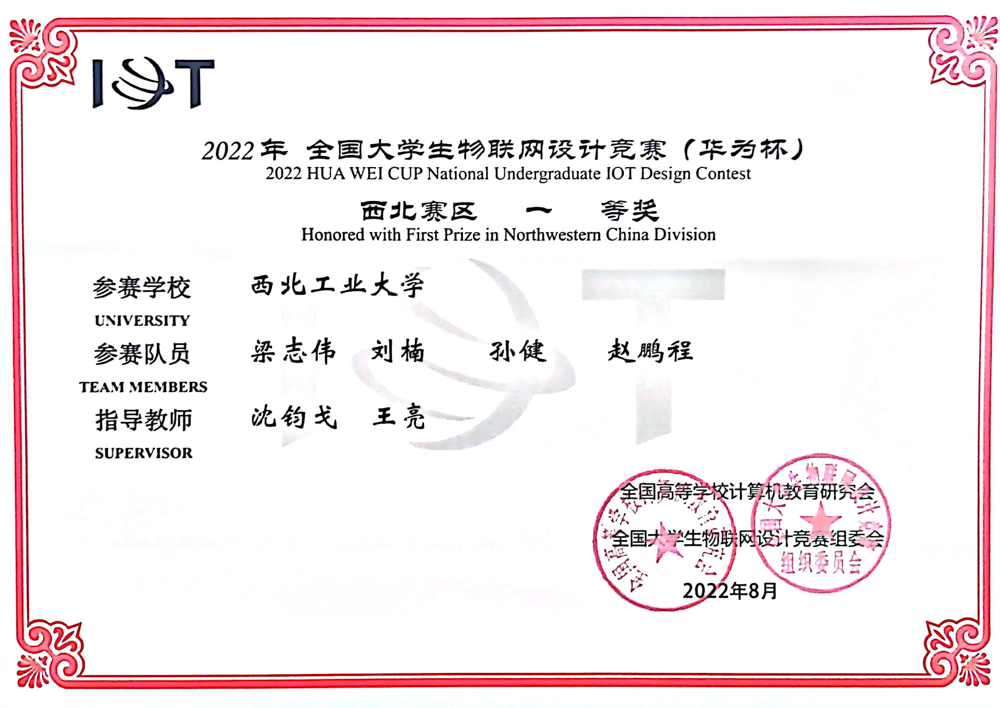

最后更新于： 2022.9.5
Education

2020.9 ~ 至今
西北工业大学
无人系统技术研究院人工智能专业在研究生期间，我深入学习了计算机视觉相关算法，钻研论文并实践项目，奠定了良好的深度学习基础。 在《人工智能导论》、《大数据跨媒体信息理解与认知》、《智能传感与检测技术》等课程取得了良好成绩(Overall GPA of 3.51 / 4.00 )。 完成两篇论文写作（一篇SCI，一篇IEEE Trans系列），受理专利一篇，写作软著两篇。 作为项目核心成员，在实践中熟练掌握了pytorch框架以及python编程语言，熟悉Linux系统以及项目docker化部署等操作。

2016.9 ~ 2020.6
武汉理工大学
计算机学院软件工程专业在本科期间，我打下了良好的代码基础，广泛学习C语言以及C++，java以及前端编程语言：HTML，CSS, JavaScript等，其中C++课程及实验均取得了90+的成绩。 深入学习了《数据结构》，《计算机网络》，《计算机组成原理》等课程。同时积极参加各类比赛，并在数学建模华中赛，亚太赛以及中国大学生计算机设计大赛 取得了优异成绩。在自己担任团支书期间，在与班长的努力下，班级获得了优秀团支部称号。
Paper

March 2022 IF: 6.859
引入一种在水平和垂直方向上均匀划分特征图的新方法进一步利用图像的局部信息。在无额外监督信息情况下，重点关注车辆具有区分性的部件。
提出了一种新的分区及融合多分支网络（PFMN），结合了全局特征和局部特征来处理难样本。 在全局特征的基础上，融合不同方向的局部特征，以获得更高的性能。
提出难样本采样三元组损失的一种新变体，通过拉近batch中正样本在特征空间中的绝对距离显著提高了mINP指标，这表明我们的模型大大提高了对难样本的检索能力。
《Joint metric learning of local and global features for vehicle re-identification》
Junge Shen, Jian Sun, Xin Wang & Zhaoyong Mao [Download]

June 2022 ~ Present IF: 5.009
提出了一种用于实时高速公路路面分割的新型双流轻量级网络，实现了不同感受野级别的特征的利用,双流结构在提取公路表面远端部分的任务中优于其他方法。
提出了一个名为 Light-Shuffle 的高效模块，以大大降低计算复杂度并提高模型的实时性能。
此外，我们设计了一个名为 RAN 的道路注意力网络模块，它能够有效地融合两个流网络的特征。
我们首先提出了实时场景下高速公路路面分割问题的研究，并建立了一个监控视角下的高质量的高速公路路面数据集，以前很少有方法研究过这个问题。
《Bi-Unet: A Dual Stream Lightweight Network for Real-time Highway Surface Segmentation》
Jian Sun, Junge Shen, Xin Wang, Zhaoyong Mao and Jing Ren [在投，暂无下载]
Awards
2020 ~ 2022
研究生二等奖学金 2021.9 年级第六名
无人系统纵横竞赛奖学金 2021.12
西北工业大学社会奖学金 2021.9
西北工业大学优秀研究生 2021.10 综合测评年级 Top 10%
······
奖学金
研究生一等奖学金 2020.9 考研生唯一一名获得研究生二等奖学金 2021.9 年级第六名
无人系统纵横竞赛奖学金 2021.12
西北工业大学社会奖学金 2021.9
西北工业大学优秀研究生 2021.10 综合测评年级 Top 10%
······

2020
能见度与气象因子的关系： 数据处理、相关性分析，三元三次多项式拟合
建立基于视频数据的能见度深度模型：基于去雾算法建立能见度估计深度模型
不依赖实测数据的能见度深度模型：利用相机成像以及车道线检测推演能见度
大雾变化趋势预测模型：非线性拟合方法
研究生数学建模比赛
全国二等奖

2021
大学生英语竞赛研究生组
全国三等奖National English Competition for College Students, Group A for postgraduate
2021
《ACADEMIC WRITING/英文学术写作与运用》
暑期学堂通过结业Basic Notions on Academic Writing. I learned how to write English papers and some important auxiliary tools and websites. Finally, I made an English report at the end of the class.

2021
"互联网+"大学生创新创业大赛
西北赛区银奖基于智慧交通概念，慧通八方团队提出了智慧高速监测分析平台。该平台基于现有路网监控视频，软硬件结合，提出基于计算机视觉、深度学习及大数据分析决策技术，提出两大核心算法，完成三大智能化功能：第一，交通信息智能化感知。第二，高速路段异常事件检测。 第三，交通事件决策调度与数据分析，利用大数据分析助力调度和响应，提供一体化的事件信息展示、预警和存储。

2022
建立标准化道路养护数据体系。利用行业资源，调研专业公路养护公司标注建立道路养护数据集符合国家标准的道路养护数据体系。
基于CNN+Transformer进行道路养护损伤检测。引入自注意力机制结合CNN局部感受野信息，构建一体化CNN+transformer网络。
物联网设计竞赛
西北赛区一等奖
2022
国防科大空天学院暑期学校
通过考核，结业
2022
国防科大电子科学学院国际暑期学校
通过考核，结业
2022
国防科大电子科学学院国际暑期学校
优秀学员
2018
亚太地区大学生数学建模比赛
Second Prize
2019
中国大学生计算机设计大赛
全国二等奖通过 Echarts 组件选择、绘制动态图表，对不同群体需求可视化；使用 python 进行数字挖掘和深层次研究；以网站为展示平台，采用扁平化架构，注重交互趣味性，以宁波市效实中学真实脱敏数据为例，实现“动态、交互、对比”的效果。

2018
华中地区大学生数学建模比赛
三等奖
2018
CAMCM数学建模比赛
二等奖
2018
大数据建模比赛
一等奖
2019
《基于改进LM神经网络的太阳能发电预测模型》
已收录本文提出了一种使用天气聚类识别和改进LM神经网络集群的太阳能预测方法。预测时根据历史发电量数据、气象数据和当天天气预报信息来预测光伏系统发电状况。 本文根据聚类的结果，对不同的天气类型建立了相应使用改进的LM算法的神经网络。 结果表明，预测模型的平均绝对误差达到了32.60kW，平均相对误差达到了6.73%，有着比其他用来比较的模型更高的精确度。
Projects
Projects
Here are some of the major projects I completed